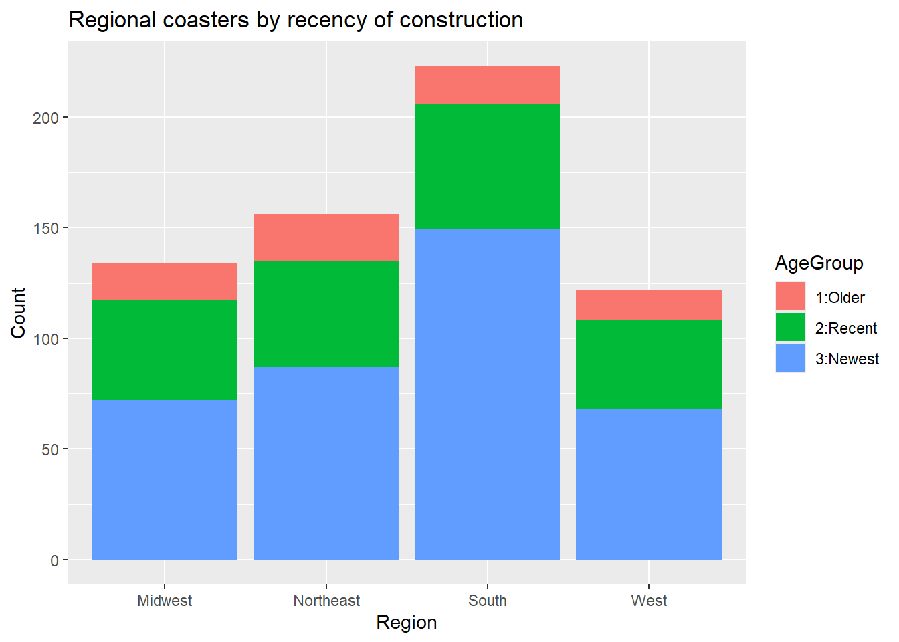
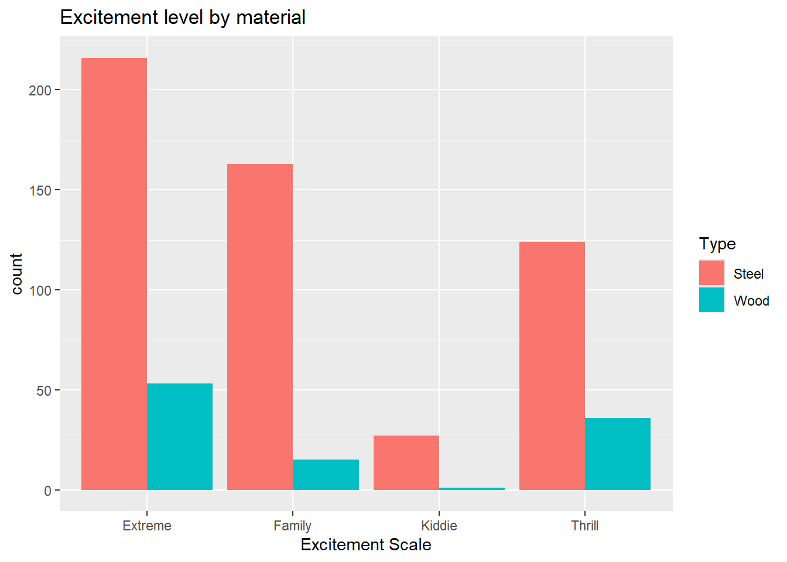

library(httr)
library(jsonlite)
library(tidyverse)Homework 5
Pulling in some relevant packages
Task 1: Querying an API
1. Using GET()
turtles <- GET("https://newsapi.org/v2/everything?q=turtle&from=2026-09-15&language=en&apiKey=a86e58b83b9b4212a6fc377f18b228f9")
turtlesResponse [https://newsapi.org/v2/everything?q=turtle&from=2026-09-15&language=en&apiKey=a86e58b83b9b4212a6fc377f18b228f9]
Date: 2026-09-21 06:36
Status: 200
Content-Type: application/json; charset=utf-8
Size: 81.9 kB2. Parsing the result
This is a very complicated object, looking through and find an article list
names(turtles) [1] "url" "status_code" "headers" "all_headers" "cookies"
[6] "content" "date" "times" "request" "handle" article.list <- fromJSON(rawToChar(turtles$content))
article.list <- as.tibble(select(article.list$articles, 2:8))
article.list# A tibble: 91 × 7
author title description url urlToImage publishedAt content
<chr> <chr> <chr> <chr> <chr> <chr> <chr>
1 <NA> Spect… "More than… http… https://w… 2026-09-15… "More …
2 Dr.W Snclr… "Snclriao … http… https://s… 2026-09-18… "Snclr…
3 Jeremy Gray These… "Nikon Ins… http… https://p… 2026-09-16… "Nikon…
4 Gabija Palšytė 68 Fa… "Nature is… http… https://s… 2026-09-19… "The t…
5 David Nield Winni… "We have t… http… https://c… 2026-09-18… "<ul><…
6 Lauren Kuivenhoven Turtl… "If you're… http… https://i… 2026-09-16… "If yo…
7 hurriyetdailynews.com Freed… "For five … http… https://i… 2026-09-16… "ANTAL…
8 Ava Reynolds Why d… "Why Do Tu… http… <NA> 2026-09-19… "Why d…
9 Cameron Carballo It’s … "By 1997 t… http… https://c… 2026-09-18… "By 19…
10 Willow Higgins Swimm… "Keith Kir… http… https://a… 2026-09-17… "The H…
# ℹ 81 more rows3. Querying with a function
a. Function writing
newsQuery <- function(subject, date, key){
url <- paste0("https://newsapi.org/v2/everything?q=",
gsub(" ", "%20", subject),
"&from=", date,
"&language=en&apiKey=", key)
query <- GET(url)
art.list <- fromJSON(rawToChar(query$content))
art.list <- as.tibble(select(art.list$articles, 2:8))
return(art.list)
}b. Function testing
test1 <- newsQuery(subject = "rats",
date = "2026-09-10",
key = "a86e58b83b9b4212a6fc377f18b228f9")
test1# A tibble: 98 × 7
author title description url urlToImage publishedAt content
<chr> <chr> <chr> <chr> <chr> <chr> <chr>
1 Cheryl Eddy ‘Rin… "Prime Vid… http… https://g… 2026-09-17… "After…
2 Victoria Song New … "This is O… http… https://p… 2026-09-10… "<ul><…
3 Germain Lussier The … "There's n… http… https://g… 2026-09-18… "One o…
4 David A. Graham Can … "The desir… http… https://c… 2026-09-18… "This …
5 Willow Higgins Swim… "Keith Kir… http… https://a… 2026-09-17… "The H…
6 Eric Lach Ric … "The direc… http… https://m… 2026-09-12… "Not l…
7 staff@slashfilm.com (… 5 Be… "If you li… http… https://w… 2026-09-18… "It wo…
8 staff@slashfilm.com (… Aven… "Not all o… http… https://w… 2026-09-19… "\"Dea…
9 Nick Statt, Greg Ott,… Why … "This inte… http… https://p… 2026-09-10… "<ul><…
10 Venki Ramakrishnan Can … "Scientist… http… https://s… 2026-09-15… "Human…
# ℹ 88 more rowstest2 <- newsQuery(subject = "climate change",
date = "2026-09-05",
key = "a86e58b83b9b4212a6fc377f18b228f9")
test2# A tibble: 97 × 7
author title description url urlToImage publishedAt content
<chr> <chr> <chr> <chr> <chr> <chr> <chr>
1 Ellyn Lapointe Clim… "An earthq… http… https://g… 2026-09-08… "On Ma…
2 https://www.facebook.… 'No … "There was… http… https://i… 2026-09-17… "A stu…
3 Justine Calma Trum… "The Envir… http… https://p… 2026-09-14… "<ul><…
4 Ellyn Lapointe Over… "A new stu… http… https://g… 2026-09-10… "As hu…
5 Ellyn Lapointe The … "A geospat… http… https://g… 2026-09-09… "While…
6 Matthew Phelan Scie… "Synergy b… http… https://g… 2026-09-14… "Somet…
7 bgriffiths@insider.co… Hugg… "\"Sorry, … http… https://i… 2026-09-11… "Huggi…
8 Tom McKay EPA … "Donald Tr… http… https://g… 2026-09-15… "The E…
9 Passant Rabie Dang… "A new stu… http… https://g… 2026-09-14… "This …
10 Jordan Blum Trum… "The EPA's… http… https://s… 2026-09-15… "The b…
# ℹ 87 more rowsTask 2 - Roller Coaster Data
Read in the data!
coaster <- read_csv("https://www4.stat.ncsu.edu/online/datasets/635USrollercoasters.csv", name_repair = "universal")Now, cleaning the data, treating factors as such. Dropping Latitude, Longitude, and Boundary.
coaster <- coaster |>
rename("Inversions" = "Inversions.")|>
rename("NumInversions" = "..of.Inversions") |>
mutate(AgeGroup = as.factor(AgeGroup),
Scale = as.factor(Scale),
Type = as.factor(Type),
Design = as.factor(Design),
Inversions = as.factor(Inversions)) |>
select(-c(19:21))
coaster# A tibble: 635 × 18
Coaster Park City State Census.Region Year.Opened AgeGroup TopSpeed
<chr> <chr> <chr> <chr> <chr> <dbl> <fct> <dbl>
1 Adrenaline Peak Oaks… Port… Oreg… West 2018 3:Newest 45
2 Adventure Expr… King… Mason Ohio Midwest 1991 2:Recent 35
3 Afterburn Caro… Char… Nort… South 1999 2:Recent 62
4 Aftershock Silv… Athol Idaho West 2008 3:Newest 65.6
5 Air Grover Busc… Tampa Flor… South 2010 3:Newest 22
6 Alpengeist Busc… Will… Virg… South 1997 2:Recent 67
7 Alpine Bobsled Grea… Quee… New … Northeast 1998 2:Recent 35
8 American Eagle Six … Gurn… Illi… Midwest 1981 2:Recent 66
9 American Thund… Six … Eure… Miss… Midwest 2008 3:Newest 48
10 Anaconda King… Dosw… Virg… South 1991 2:Recent 50
# ℹ 625 more rows
# ℹ 10 more variables: MaxHeight <dbl>, Scale <fct>, Type <fct>, Design <fct>,
# Drop <dbl>, Length <dbl>, Duration <dbl>, Inversions <fct>,
# NumInversions <dbl>, Make <chr>4. Take a look at data structure / storage:
str(coaster)tibble [635 × 18] (S3: tbl_df/tbl/data.frame)
$ Coaster : chr [1:635] "Adrenaline Peak" "Adventure Express" "Afterburn" "Aftershock" ...
$ Park : chr [1:635] "Oaks Amusement Park" "Kings Island" "Carowinds" "Silverwood Theme Park" ...
$ City : chr [1:635] "Portland" "Mason" "Charlotte" "Athol" ...
$ State : chr [1:635] "Oregon" "Ohio" "North Carolina" "Idaho" ...
$ Census.Region: chr [1:635] "West" "Midwest" "South" "West" ...
$ Year.Opened : num [1:635] 2018 1991 1999 2008 2010 ...
$ AgeGroup : Factor w/ 3 levels "1:Older","2:Recent",..: 3 2 2 3 3 2 2 2 3 2 ...
$ TopSpeed : num [1:635] 45 35 62 65.6 22 67 35 66 48 50 ...
$ MaxHeight : num [1:635] 72 63 113 192 25 ...
$ Scale : Factor w/ 4 levels "Extreme","Family",..: 1 4 1 1 2 1 4 1 4 1 ...
$ Type : Factor w/ 2 levels "Steel","Wood": 1 1 1 1 1 1 1 2 2 1 ...
$ Design : Factor w/ 7 levels "Bobsled","Flying",..: 4 4 3 3 4 3 1 4 4 4 ...
$ Drop : num [1:635] 70 47 110 177 22.5 170 20 147 80 144 ...
$ Length : num [1:635] 1050 2963 2956 1204 628 ...
$ Duration : num [1:635] 66 140 167 92 47 190 100 143 110 110 ...
$ Inversions : Factor w/ 2 levels "No","Yes": 2 1 2 2 1 2 1 1 1 2 ...
$ NumInversions: num [1:635] 3 0 6 3 0 6 0 0 0 4 ...
$ Make : chr [1:635] "Gerstlauer Amusement Rides GmbH" "Arrow Dynamics" "Bolliger & Mabillard" "Vekoma" ...These look good! All the data types make sense. Taking a look with summary():
summary(coaster) Coaster Park City State
Length:635 Length:635 Length:635 Length:635
Class :character Class :character Class :character Class :character
Mode :character Mode :character Mode :character Mode :character
Census.Region Year.Opened AgeGroup TopSpeed
Length:635 Min. :1920 1:Older : 69 Min. : 6.00
Class :character 1st Qu.:1995 2:Recent:190 1st Qu.: 28.50
Mode :character Median :2002 3:Newest:376 Median : 45.00
Mean :1999 Mean : 42.24
3rd Qu.:2013 3rd Qu.: 55.00
Max. :2020 Max. :128.00
NA's :74
MaxHeight Scale Type Design Drop
Min. : 5.0 Extreme:269 Steel:530 Bobsled : 4 Min. : 0.00
1st Qu.: 28.0 Family :178 Wood :105 Flying : 9 1st Qu.: 25.00
Median : 64.3 Kiddie : 28 Inverted : 42 Median : 70.00
Mean : 76.8 Thrill :160 Sit Down :560 Mean : 77.18
3rd Qu.:109.0 Stand Up : 4 3rd Qu.:108.50
Max. :456.0 Suspended: 7 Max. :418.00
NA's :8 Wing : 9 NA's :128
Length Duration Inversions NumInversions Make
Min. : 48 Min. : 20 No :465 Min. :0.0000 Length:635
1st Qu.: 900 1st Qu.: 70 Yes:170 1st Qu.:0.0000 Class :character
Median :1490 Median :101 Median :0.0000 Mode :character
Mean :1938 Mean :106 Mean :0.9213
3rd Qu.:2800 3rd Qu.:130 3rd Qu.:1.0000
Max. :7359 Max. :540 Max. :8.0000
NA's :33 NA's :66 5. Document missing values
Seems like there are some NA values in TopSpeed, MaxHeight, Drop, Length, and Duration. Let’s check more thoroughly with is.na():
colSums(is.na(coaster)) Coaster Park City State Census.Region
0 0 0 0 0
Year.Opened AgeGroup TopSpeed MaxHeight Scale
0 0 74 8 0
Type Design Drop Length Duration
0 0 128 33 66
Inversions NumInversions Make
0 0 36 Looks like there are some NAs in the character columns too. Good to know.
Contingency Tables
6. Basic Tables
Table 1:
cat("=== Table 1: Regions === \n")
table(coaster$Census.Region)=== Table 1: Regions ===
Midwest Northeast South West
134 156 223 122 This table shows us that the southern census region has the most (223) rollercoasters from this list
cat("=== Table 2: Age Group and Scale ===\n")
table(coaster$AgeGroup, coaster$Scale)=== Table 2: Age Group and Scale ===
Extreme Family Kiddie Thrill
1:Older 17 13 5 34
2:Recent 105 40 9 36
3:Newest 147 125 14 90This list shows us that there are 147 “Extreme” coasters that are also recently constructed
cat("=== Table 3: Scale, Region, and Inversions ===\n")
table(coaster$Scale, coaster$Census.Region, coaster$Inversions)=== Table 3: Scale, Region, and Inversions ===
, , = No
Midwest Northeast South West
Extreme 28 25 31 15
Family 32 49 68 29
Kiddie 8 7 6 7
Thrill 33 38 57 32
, , = Yes
Midwest Northeast South West
Extreme 33 37 61 39
Family 0 0 0 0
Kiddie 0 0 0 0
Thrill 0 0 0 0This three-way table shows us that there are notably fewer coasters with inversions, and that all of them are categorized as “Extreme”.
7. Conditional Tables
wooden <- filter(coaster, Type == "Wood")
cat("=== Scale & Design, Wooden Coasters ===\n")
table(wooden$Scale, wooden$Design)=== Scale & Design, Wooden Coasters ===
Bobsled Flying Inverted Sit Down Stand Up Suspended Wing
Extreme 0 0 0 53 0 0 0
Family 0 0 0 15 0 0 0
Kiddie 0 0 0 1 0 0 0
Thrill 1 0 0 35 0 0 0This table shows us that there is one singular wooden coaster of design “Bobsled”, and that it’s scale is “Thrill”
cat("=== Region & Type, Old Coasters ===\n")
oldcoaster <- table(coaster$Census.Region, coaster$Type, coaster$AgeGroup)
oldcoaster[, , 1]=== Region & Type, Old Coasters ===
Steel Wood
Midwest 9 8
Northeast 7 14
South 11 6
West 9 58. Tidyverse contingency
tidytable <- coaster |>
group_by(Census.Region, Scale) |>
summarize(count = n())
tidytable# A tibble: 16 × 3
# Groups: Census.Region [4]
Census.Region Scale count
<chr> <fct> <int>
1 Midwest Extreme 61
2 Midwest Family 32
3 Midwest Kiddie 8
4 Midwest Thrill 33
5 Northeast Extreme 62
6 Northeast Family 49
7 Northeast Kiddie 7
8 Northeast Thrill 38
9 South Extreme 92
10 South Family 68
11 South Kiddie 6
12 South Thrill 57
13 West Extreme 54
14 West Family 29
15 West Kiddie 7
16 West Thrill 32tidytable |> pivot_wider(names_from = Census.Region, values_from = count)# A tibble: 4 × 5
Scale Midwest Northeast South West
<fct> <int> <int> <int> <int>
1 Extreme 61 62 92 54
2 Family 32 49 68 29
3 Kiddie 8 7 6 7
4 Thrill 33 38 57 329. Figures
Stacked Bars
stacked <- ggplot(data = coaster, aes(x = Census.Region, fill = AgeGroup))+
geom_bar()+
labs(x = "Region", y = "Count", title = "Regional coasters by recency of construction")
stacked
Side-by-side bars
sbs <- ggplot(data = coaster, aes(x = Scale, fill = Type))+
geom_bar(position = "dodge")+
labs(x = "Excitement Scale", y = "count", title = "Excitement level by material")
sbs